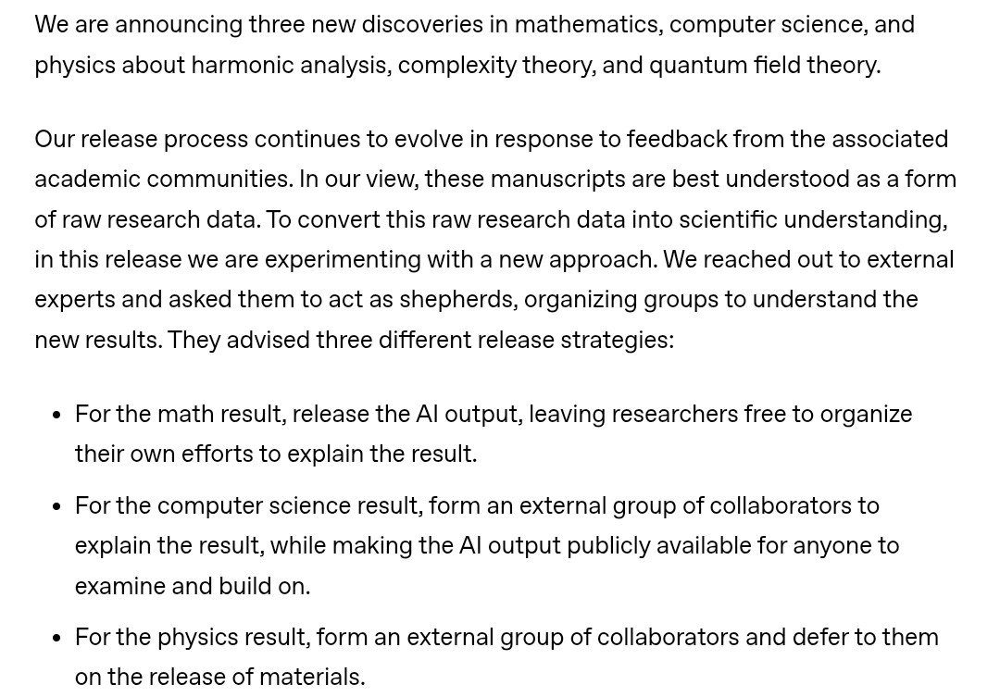

AI och tech
Delvis obekräftatAI-modeller från OpenAI och Anthropic säger sig ha fällt en 27 år gammal hypotes i datavetenskapen

Interna AI-modeller hos både OpenAI och Anthropic uppges oberoende av varandra ha hittat en algoritm som motbevisar den exponentiella tidshypotesen, ett grundantagande som hundratals forskningsartiklar vilar på. Hypotesens upphovsmän leder nu en öppen granskning, och resultatet är ännu inte bekräftat.
Den exponentiella tidshypotesen formulerades 1999 av datavetarna Russell Impagliazzo och Mohan Paturi. Den säger i korthet att ett klassiskt logikproblem, 3-SAT, inte går att lösa mycket snabbare än genom att i princip pröva alla möjligheter. Hypotesen har aldrig bevisats, men hundratals forskningsresultat om hur svåra olika problem är bygger på att den stämmer.
Den 26 oktober meddelade OpenAI att en intern modell tagit fram en algoritm som löser 3-SAT, och till och med räknar antalet lösningar, i så kallad subexponentiell tid. Enligt MIT-professorn Ryan Williams, som länkade till OpenAI:s artikel, är den påstådda körtiden ungefär exp(n/(log n)^{1/2+o(1)}) för n variabler. Beviset ska också vara formaliserat i Lean, ett program som kontrollerar varje logiskt steg. Samtidigt presenterade OpenAI påstådda resultat inom matematik och fysik, enligt AI-skribenten Andrew Curran.
Claude kom fram till samma sak
Dagen efter publicerade Anthropic en egen artikel där Claude står som enda författare. Enligt Anthropic hittade en intern forskningsmodell motbevisningen redan den 16 oktober, med 14 miljoner genererade textbitar (token) och utan mänsklig inblandning, och forskarna hjälpte sedan till med presentationen. Flera kommentatorer på X noterar att OpenAI daterar sitt fynd till samma dag. Varför båda labben kom fram till samma resultat samtidigt är oklart, och Curran kallar situationen "extremt förvirrande".
Hypotesens skapare granskar
Williams skriver att han, Impagliazzo och Paturi har ombetts organisera en öppen och oberoende granskning. De har inte skrivit på några sekretessavtal och får ingen ersättning, så de kan dela vad de hittar löpande, och de har bett OpenAI att släppa all rådata. I ett gemensamt uttalande, som komplexitetsforskaren Lance Fortnow delade, betonar de att deras medverkan inte ska tolkas som en bekräftelse. Den 29 oktober startade de en diskussionsblogg och en samling av artiklarna.
Vad det betyder och inte betyder
Fortnow påpekar att resultatet inte för oss närmare lösningen på den berömda frågan om P är lika med NP. Det gör inte heller andra svåra problem, som graffärgning eller logikproblem utan gräns för klausulernas längd, snabbare att lösa. Enligt X:s nyhetssammanfattning säger kryptografer att det inte är något omedelbart hot mot kryptering. Kommentatorer uppger dessutom att algoritmen bara slår vanlig genomsökning för ofantligt stora problem, men de siffror som nämns skiljer sig kraftigt åt.
Williams själv låter imponerad. Han skriver att han i åratal försökt bryta en starkare version av hypotesen, och att det är anmärkningsvärt att en metod som fortfarande prövar sig igenom delar av problemet räcker. Han tror att fler förbättringar är på väg. En kommentator påpekar också att ingen ännu har kontrollerat att påståendet i Lean-koden verkligen motsvarar det som står i artikeln, och det är en av de saker granskningen behöver svara på.
Så vet vi det
Källmix: 11 källor – 2 primärkälla, 5 expert, 1 analys, 2 journalist, 1 debattör. Etablerad media utgör 0 av 11.
- Primärkälla Ryan Williams (MIT): granskningen organiseras öppet
- Primärkälla Ryan Williams: inga sekretessavtal, krav på rådata
- Expert Ryan Williams: länk till OpenAI:s artikel och körtiden
- Expert Lance Fortnow: granskarnas uttalande
- Expert Lance Fortnow: P mot NP är inte löst
- Expert Lance Fortnow: granskarnas diskussionsblogg
- Expert Ryan Williams: tror på fler förbättringar
- Journalist Andrew Curran: OpenAI:s tre tillkännagivanden
- Journalist Andrew Curran: Claude kom fram till samma sak
- Debattör Anupam: Lean-påståendet är inte kontrollerat mot artikeln
- Analys X:s nyhetssammanfattning: kryptografer ser inget direkt hot
Påståendet kommer från OpenAI och Anthropic själva. Granskningen som leds av Impagliazzo, Paturi och Williams pågår, och de skriver uttryckligen att deras medverkan inte är någon bekräftelse. Uppgifter om när algoritmen blir snabbare än vanlig genomsökning skiljer sig mellan kommentatorer och är inte kontrollerade.
Fördjupa
Frågorna öppnar Grok i en ny flik med artikeln som underlag. AI-svar kan innehålla fel, så kontrollera mot källorna.
- Vad är 3-SAT, förklarat med ett vardagligt exempel? ↗
- Vad är skillnaden mellan den exponentiella tidshypotesen och frågan om P är lika med NP? ↗
- Varför spelar det roll om en algoritm är "subexponentiell" om den inte går fortare i praktiken? ↗
- Kan resultatet påverka kryptering och säkerhet på sikt? ↗
- Hur går en öppen granskning av ett matematiskt bevis till, och hur lång tid brukar den ta? ↗
- Vad betyder det att två AI-labb hittade samma resultat samma dag? ↗
Läs vidare
Uppdateringslogg
- 22:17 – Artikeln publicerad.